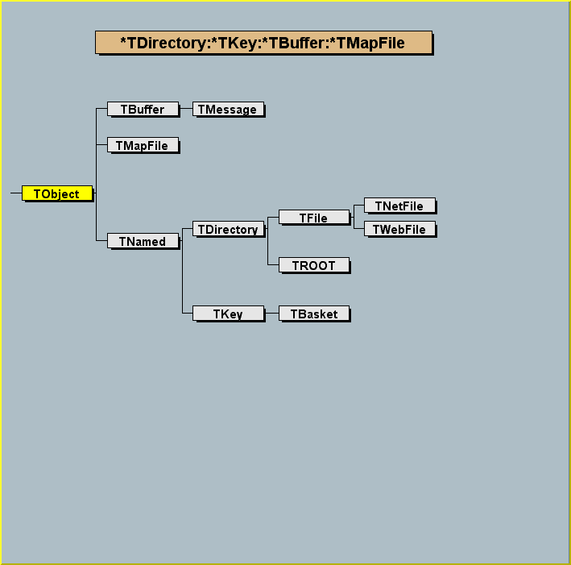
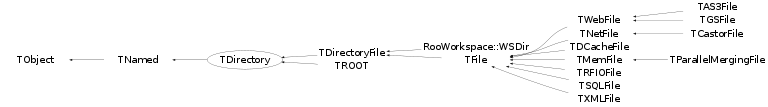

class TDirectory: public TNamed
/*  */
Function Members (Methods)
public:
| TDirectory() | |
| TDirectory(const char* name, const char* title, Option_t* option = "", TDirectory* motherDir = 0) | |
| virtual | ~TDirectory() |
| void | TObject::AbstractMethod(const char* method) const |
| virtual void | Add(TObject* obj, Bool_t replace = kFALSE) |
| static void | AddDirectory(Bool_t add = kTRUE) |
| static Bool_t | AddDirectoryStatus() |
| virtual void | Append(TObject* obj, Bool_t replace = kFALSE) |
| virtual Int_t | AppendKey(TKey*) |
| virtual void | TObject::AppendPad(Option_t* option = "") |
| virtual void | Browse(TBrowser* b) |
| virtual void | Build(TFile* motherFile = 0, TDirectory* motherDir = 0) |
| virtual Bool_t | cd(const char* path = 0) |
| static Bool_t | Cd(const char* path) |
| static TClass* | Class() |
| virtual const char* | TObject::ClassName() const |
| virtual void | Clear(Option_t* option = "") |
| virtual TObject* | TNamed::Clone(const char* newname = "") const |
| virtual TObject* | CloneObject(const TObject* obj, Bool_t autoadd = kTRUE) |
| virtual void | Close(Option_t* option = "") |
| virtual Int_t | TNamed::Compare(const TObject* obj) const |
| virtual void | Copy(TObject&) const |
| static TDirectory*& | CurrentDirectory() |
| static void | DecodeNameCycle(const char* namecycle, char* name, Short_t& cycle) |
| virtual void | Delete(const char* namecycle = "") |
| virtual void | DeleteAll(Option_t* option = "") |
| virtual Int_t | TObject::DistancetoPrimitive(Int_t px, Int_t py) |
| virtual void | Draw(Option_t* option = "") |
| virtual void | TObject::DrawClass() constMENU |
| virtual TObject* | TObject::DrawClone(Option_t* option = "") constMENU |
| virtual void | TObject::Dump() constMENU |
| static void | EncodeNameCycle(char* buffer, const char* name, Short_t cycle) |
| virtual void | TObject::Error(const char* method, const char* msgfmt) const |
| virtual void | TObject::Execute(const char* method, const char* params, Int_t* error = 0) |
| virtual void | TObject::Execute(TMethod* method, TObjArray* params, Int_t* error = 0) |
| virtual void | TObject::ExecuteEvent(Int_t event, Int_t px, Int_t py) |
| virtual void | TObject::Fatal(const char* method, const char* msgfmt) const |
| virtual void | TNamed::FillBuffer(char*& buffer) |
| virtual TKey* | FindKey(const char*) const |
| virtual TKey* | FindKeyAny(const char*) const |
| virtual TObject* | FindObject(const char* name) const |
| virtual TObject* | FindObject(const TObject* obj) const |
| virtual TObject* | FindObjectAny(const char* name) const |
| virtual TObject* | FindObjectAnyFile(const char*) const |
| virtual TObject* | Get(const char* namecycle) |
| virtual Int_t | GetBufferSize() const |
| virtual TDirectory* | GetDirectory(const char* namecycle, Bool_t printError = false, const char* funcname = "GetDirectory") |
| virtual Option_t* | TObject::GetDrawOption() const |
| static Long_t | TObject::GetDtorOnly() |
| virtual TFile* | GetFile() const |
| virtual const char* | TObject::GetIconName() const |
| virtual TKey* | GetKey(const char*, Short_t = 9999) const |
| virtual TList* | GetList() const |
| virtual TList* | GetListOfKeys() const |
| virtual TObject* | GetMother() const |
| virtual TDirectory* | GetMotherDir() const |
| virtual const char* | TNamed::GetName() const |
| virtual Int_t | GetNbytesKeys() const |
| virtual Int_t | GetNkeys() const |
| void | GetObject(const char* namecycle, void*& ptr) |
| virtual void* | GetObjectChecked(const char* namecycle, const char* classname) |
| virtual void* | GetObjectChecked(const char* namecycle, const TClass* cl) |
| virtual char* | TObject::GetObjectInfo(Int_t px, Int_t py) const |
| static Bool_t | TObject::GetObjectStat() |
| virtual void* | GetObjectUnchecked(const char* namecycle) |
| virtual Option_t* | TObject::GetOption() const |
| virtual const char* | GetPath() const |
| virtual const char* | GetPathStatic() const |
| virtual Long64_t | GetSeekDir() const |
| virtual Long64_t | GetSeekKeys() const |
| virtual Long64_t | GetSeekParent() const |
| virtual const char* | TNamed::GetTitle() const |
| virtual UInt_t | TObject::GetUniqueID() const |
| TUUID | GetUUID() const |
| virtual Bool_t | TObject::HandleTimer(TTimer* timer) |
| virtual ULong_t | TNamed::Hash() const |
| virtual void | TObject::Info(const char* method, const char* msgfmt) const |
| virtual Bool_t | TObject::InheritsFrom(const char* classname) const |
| virtual Bool_t | TObject::InheritsFrom(const TClass* cl) const |
| virtual void | TObject::Inspect() constMENU |
| void | TObject::InvertBit(UInt_t f) |
| virtual TClass* | IsA() const |
| virtual Bool_t | TObject::IsEqual(const TObject* obj) const |
| virtual Bool_t | IsFolder() const |
| virtual Bool_t | IsModified() const |
| Bool_t | TObject::IsOnHeap() const |
| virtual Bool_t | TNamed::IsSortable() const |
| virtual Bool_t | IsWritable() const |
| Bool_t | TObject::IsZombie() const |
| virtual void | ls(Option_t* option = "") const |
| void | TObject::MayNotUse(const char* method) const |
| virtual TDirectory* | mkdir(const char* name, const char* title = "") |
| virtual Bool_t | TObject::Notify() |
| void | TObject::Obsolete(const char* method, const char* asOfVers, const char* removedFromVers) const |
| virtual TFile* | OpenFile(const char*, Option_t* = "", const char* = "", Int_t = 1, Int_t = 0) |
| static void | TObject::operator delete(void* ptr) |
| static void | TObject::operator delete(void* ptr, void* vp) |
| static void | TObject::operator delete[](void* ptr) |
| static void | TObject::operator delete[](void* ptr, void* vp) |
| void* | TObject::operator new(size_t sz) |
| void* | TObject::operator new(size_t sz, void* vp) |
| void* | TObject::operator new[](size_t sz) |
| void* | TObject::operator new[](size_t sz, void* vp) |
| virtual void | Paint(Option_t* option = "") |
| virtual void | TObject::Pop() |
| virtual void | Print(Option_t* option = "") const |
| virtual void | Purge(Short_t = 1) |
| virtual void | pwd() const |
| virtual Int_t | TObject::Read(const char* name) |
| virtual void | ReadAll(Option_t* = "") |
| virtual Int_t | ReadKeys(Bool_t = kTRUE) |
| virtual Int_t | ReadTObject(TObject*, const char*) |
| virtual void | RecursiveRemove(TObject* obj) |
| virtual TObject* | Remove(TObject*) |
| void | TObject::ResetBit(UInt_t f) |
| virtual void | rmdir(const char* name) |
| virtual void | Save() |
| virtual void | TObject::SaveAs(const char* filename = "", Option_t* option = "") constMENU |
| virtual Int_t | SaveObjectAs(const TObject*, const char* = "", Option_t* = "") const |
| virtual void | TObject::SavePrimitive(ostream& out, Option_t* option = "") |
| virtual void | SaveSelf(Bool_t = kFALSE) |
| void | TObject::SetBit(UInt_t f) |
| void | TObject::SetBit(UInt_t f, Bool_t set) |
| virtual void | SetBufferSize(Int_t) |
| virtual void | TObject::SetDrawOption(Option_t* option = "")MENU |
| static void | TObject::SetDtorOnly(void* obj) |
| virtual void | SetModified() |
| virtual void | SetMother(TObject* mother) |
| virtual void | SetName(const char* newname) |
| virtual void | TNamed::SetNameTitle(const char* name, const char* title) |
| static void | TObject::SetObjectStat(Bool_t stat) |
| virtual void | SetSeekDir(Long64_t) |
| virtual void | TNamed::SetTitle(const char* title = "")MENU |
| virtual void | SetTRefAction(TObject*, TObject*) |
| virtual void | TObject::SetUniqueID(UInt_t uid) |
| virtual void | SetWritable(Bool_t) |
| virtual void | ShowMembers(TMemberInspector& insp) |
| virtual Int_t | Sizeof() const |
| virtual void | Streamer(TBuffer& b) |
| void | StreamerNVirtual(TBuffer& b) |
| virtual void | TObject::SysError(const char* method, const char* msgfmt) const |
| Bool_t | TObject::TestBit(UInt_t f) const |
| Int_t | TObject::TestBits(UInt_t f) const |
| virtual void | TObject::UseCurrentStyle() |
| virtual void | TObject::Warning(const char* method, const char* msgfmt) const |
| virtual Int_t | Write(const char* = 0, Int_t = 0, Int_t = 0) |
| virtual Int_t | Write(const char* = 0, Int_t = 0, Int_t = 0) const |
| virtual void | WriteDirHeader() |
| virtual void | WriteKeys() |
| Int_t | WriteObject(const void* obj, const char* name, Option_t* option = "", Int_t bufsize = 0) |
| virtual Int_t | WriteObjectAny(const void*, const char*, const char*, Option_t* = "", Int_t = 0) |
| virtual Int_t | WriteObjectAny(const void*, const TClass*, const char*, Option_t* = "", Int_t = 0) |
| virtual Int_t | WriteTObject(const TObject* obj, const char* name = 0, Option_t* = "", Int_t = 0) |
protected:
| TDirectory(const TDirectory& directory) | |
| Bool_t | cd1(const char* path) |
| static Bool_t | Cd1(const char* path) |
| virtual void | CleanTargets() |
| virtual void | TObject::DoError(int level, const char* location, const char* fmt, va_list va) const |
| void | FillFullPath(TString& buf) const |
| void | TObject::MakeZombie() |
| void | operator=(const TDirectory&) |
| void | RegisterContext(TDirectory::TContext* ctxt) |
| void | UnregisterContext(TDirectory::TContext* ctxt) |
Data Members
public:
| enum TObject::EStatusBits { | kCanDelete | |
| kMustCleanup | ||
| kObjInCanvas | ||
| kIsReferenced | ||
| kHasUUID | ||
| kCannotPick | ||
| kNoContextMenu | ||
| kInvalidObject | ||
| }; | ||
| enum TObject::[unnamed] { | kIsOnHeap | |
| kNotDeleted | ||
| kZombie | ||
| kBitMask | ||
| kSingleKey | ||
| kOverwrite | ||
| kWriteDelete | ||
| }; |
protected:
| TDirectory::TContext* | fContext | !Pointer to a list of TContext object pointing to this TDirectory |
| TList* | fList | List of objects in memory |
| TObject* | fMother | pointer to mother of the directory |
| TString | TNamed::fName | object identifier |
| TString | fPathBuffer | !Buffer for GetPath() function |
| TString | TNamed::fTitle | object title |
| TUUID | fUUID | Unique identifier |
| static Bool_t | fgAddDirectory | !flag to add histograms, graphs,etc to the directory |
Class Charts
{kind=link}
{kind=link}
{kind=link}
{kind=link}

Function documentation
TDirectory(const char* name, const char* title, Option_t* option = "", TDirectory* motherDir = 0)
Create a new Directory *-*- *-* ====================== A new directory with name,title is created in the current directory The directory header information is immediately saved in the file A new key is added in the parent directory When this constructor is called from a class directly derived from TDirectory, the third argument classname MUST be specified. In this case, classname must be the name of the derived class. Note that the directory name cannot contain slashes.
void AddDirectory(Bool_t add = kTRUE)
Sets the flag controlling the automatic add objects like histograms, TGraph2D, etc in memory By default (fAddDirectory = kTRUE), these objects are automatically added to the list of objects in memory. Note that in the classes like TH1, TGraph2D supporting this facility, one object can be removed from its support directory by calling object->SetDirectory(0) or object->SetDirectory(dir) to add it to the list of objects in the directory dir. NOTE that this is a static function. To call it, use; TDirectory::AddDirectory
void Build(TFile* motherFile = 0, TDirectory* motherDir = 0)
-*-*Initialise directory to defaults *-* ================================
TObject * CloneObject(const TObject* obj, Bool_t autoadd = kTRUE)
Clone an object. This function is called when the directory is not a TDirectoryFile. This version has to load the I/O package, hence via CINT If autoadd is true and if the object class has a DirectoryAutoAdd function, it will be called at the end of the function with the parameter gDirector. This usually means that the object will be appended to the current ROOT directory.
TDirectory * GetDirectory(const char* namecycle, Bool_t printError = false, const char* funcname = "GetDirectory")
Find a directory using apath. It apath is null or empty, returns "this" directory. Otherwie use apath to find a directory. The absolute path syntax is: file.root:/dir1/dir2 where file.root is the file and /dir1/dir2 the desired subdirectory in the file. Relative syntax is relative to "this" directory. E.g: ../aa. Returns 0 in case path does not exist. If printError is true, use Error with 'funcname' to issue an error message.
Bool_t cd(const char* path = 0)
Change current directory to "this" directory . Using path one can change the current directory to "path". The absolute path syntax is: file.root:/dir1/dir2 where file.root is the file and /dir1/dir2 the desired subdirectory in the file. Relative syntax is relative to "this" directory. E.g: ../aa. Returns kTRUE in case of success.
Bool_t cd1(const char* path)
Change current directory to "this" directory . Using path one can change the current directory to "path". The absolute path syntax is: file.root:/dir1/dir2 where file.root is the file and /dir1/dir2 the desired subdirectory in the file. Relative syntax is relative to "this" directory. E.g: ../aa. Returns kFALSE in case path does not exist.
Bool_t Cd(const char* path)
Change current directory to "path". The absolute path syntax is: file.root:/dir1/dir2 where file.root is the file and /dir1/dir2 the desired subdirectory in the file. Relative syntax is relative to the current directory gDirectory, e.g.: ../aa. Returns kTRUE in case of success.
Bool_t Cd1(const char* path)
Change current directory to "path". The path syntax is: file.root:/dir1/dir2 where file.root is the file and /dir1/dir2 the desired subdirectory in the file. Returns kFALSE in case path does not exist.
void Clear(Option_t* option = "")
Delete all objects from a Directory list-*- *-* =======================================
void Delete(const char* namecycle = "")
Delete Objects or/and keys in a directory *-* ========================================= namecycle has the format name;cycle namecycle = "" same as namecycle ="T*" name = * means all cycle = * means all cycles (memory and keys) cycle = "" or cycle = 9999 ==> apply to a memory object When name=* use T* to delete subdirectories also To delete one directory, you must specify the directory cycle, eg. file.Delete("dir1;1"); examples: foo : delete object named foo in memory foo* : delete all objects with a name starting with foo foo;1 : delete cycle 1 of foo on file foo;* : delete all cycles of foo on file and also from memory *;2 : delete all objects on file having the cycle 2 *;* : delete all objects from memory and file T*;* : delete all objects from memory and file and all subdirectories
void Draw(Option_t* option = "")
-*-*Fill Graphics Structure and Paint *-* ================================= Loop on all objects (memory or file) and all subdirectories
TObject * FindObjectAny(const char* name) const
Find object by name in the list of memory objects of the current directory or its sub-directories. After this call the current directory is not changed. To automatically set the current directory where the object is found, use FindKeyAny(aname)->ReadObj().
TObject * Get(const char* namecycle)
return pointer to object identified by namecycle namecycle has the format name;cycle name = * is illegal, cycle = * is illegal cycle = "" or cycle = 9999 ==> apply to a memory object examples: foo : get object named foo in memory if object is not in memory, try with highest cycle from file foo;1 : get cycle 1 of foo on file The retrieved object should in principle derive from TObject. If not, the function TDirectory::GetObject should be called. However, this function will still work for a non-TObject, providing that the calling application cast the return type to the correct type (which is the actual type of the object). NOTE: The method GetObject offer better protection and avoid the need for any cast: MyClass *obj; directory->GetObject("some object",obj); if (obj) { ... the object exist and inherits from MyClass ... } VERY IMPORTANT NOTE: In case the class of this object derives from TObject but not as a first inheritance, one must use dynamic_cast<>(). Example 1: Normal case: class MyClass : public TObject, public AnotherClass then on return, one can do: MyClass *obj = (MyClass*)directory->Get("some object of MyClass"); Example 2: Special case: class MyClass : public AnotherClass, public TObject then on return, one must do: MyClass *obj = dynamic_cast<MyClass*>(directory->Get("some object of MyClass")); Of course, dynamic_cast<> can also be used in the example 1.
void * GetObjectUnchecked(const char* namecycle)
return pointer to object identified by namecycle. The returned object may or may not derive from TObject. namecycle has the format name;cycle name = * is illegal, cycle = * is illegal cycle = "" or cycle = 9999 ==> apply to a memory object VERY IMPORTANT NOTE: The calling application must cast the returned object to the final type, e.g. MyClass *obj = (MyClass*)directory->GetObject("some object of MyClass");
void * GetObjectChecked(const char* namecycle, const char* classname)
See documentation of TDirectory::GetObjectCheck(const char *namecycle, const TClass *cl)
void * GetObjectChecked(const char* namecycle, const TClass* cl)
return pointer to object identified by namecycle if and only if the actual object is a type suitable to be stored as a pointer to a "expectedClass" If expectedClass is null, no check is performed. namecycle has the format name;cycle name = * is illegal, cycle = * is illegal cycle = "" or cycle = 9999 ==> apply to a memory object VERY IMPORTANT NOTE: The calling application must cast the returned pointer to the type described by the 2 arguments (i.e. cl): MyClass *obj = (MyClass*)directory->GetObjectChecked("some object of MyClass","MyClass")); Note: We recommend using the method TDirectory::GetObject: MyClass *obj = 0; directory->GetObject("some object inheriting from MyClass",obj); if (obj) { ... we found what we are looking for ... }
const char * GetPathStatic() const
Returns the full path of the directory. E.g. file:/dir1/dir2. The returned path will be re-used by the next call to GetPath().
const char * GetPath() const
Returns the full path of the directory. E.g. file:/dir1/dir2. The returned path will be re-used by the next call to GetPath().
TDirectory * mkdir(const char* name, const char* title = "")
Create a sub-directory and return a pointer to the created directory. Returns 0 in case of error. Returns 0 if a directory with the same name already exists. Note that the directory name may be of the form "a/b/c" to create a hierarchy of directories. In this case, the function returns the pointer to the "a" directory if the operation is successful.
void ls(Option_t* option = "") const
List Directory contents.
Indentation is used to identify the directory tree
Subdirectories are listed first, then objects in memory.
The option can has the following format:
[<regexp>]
The <regexp> will be used to match the name of the objects.
By default memory and disk objects are listed.
void rmdir(const char* name)
Removes subdirectory from the directory When directory is deleted, all keys in all subdirectories will be read first and deleted from file (if exists) Equivalent call is Delete("name;*");
Int_t SaveObjectAs(const TObject* , const char* = "", Option_t* = "") const
Save object in filename, if filename is 0 or "", a file with "objectname.root" is created. The name of the key is the object name. If the operation is successful, it returns the number of bytes written to the file otherwise it returns 0. By default a message is printed. Use option "q" to not print the message.
void SetName(const char* newname)
Set the name for directory If the directory name is changed after the directory was written once, ROOT currently would NOT change the name of correspondent key in the mother directory. DO NOT use this method to 'rename a directory'. Renaming a directory is currently NOT supported.
void EncodeNameCycle(char* buffer, const char* name, Short_t cycle)
Encode the name and cycle into buffer like: "aap;2".
void DecodeNameCycle(const char* namecycle, char* name, Short_t& cycle)
Decode a namecycle "aap;2" into name "aap" and cycle "2".
void RegisterContext(TDirectory::TContext* ctxt)
Register a TContext pointing to this TDirectory object
Int_t WriteTObject(const TObject* obj, const char* name = 0, Option_t* = "", Int_t = 0)
See TDirectoryFile::WriteTObject for details
void UnregisterContext(TDirectory::TContext* ctxt)
UnRegister a TContext pointing to this TDirectory object
TContext& operator=(const TDirectory& )
template <class T> inline void GetObject(const char* namecycle, void*& ptr)
template <class T> inline Int_t WriteObject(const void* obj, const char* name, Option_t* option = "", Int_t bufsize = 0)
return WriteObjectAny(obj,TBuffer::GetClass(typeid(T)),name,option,bufsize)
Int_t WriteObjectAny(const void* , const char* , const char* , Option_t* = "", Int_t = 0)
{return 0;}